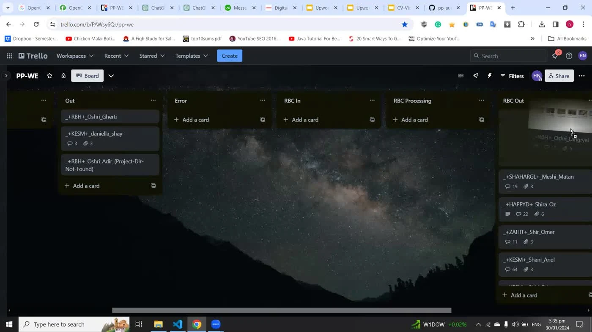

Benchmark applies to this measured workflow.
The problem
Large multi-camera wedding projects require footage review, quality checks, content classification, synchronization, and sequencing before an editor can work with a useful timeline.
My contribution
I built and integrated CV/video-analysis subsystems, media utilities, and Premiere automation, and performance-tuned long-form processing within a long-running client engagement.
What I delivered
- Footage quality analysis, obstruction checks, and clip-selection logic integrated into the editing workflow.
- Scene/event categorization and deterministic sequencing rules feeding automated Premiere timeline generation.
- Media normalization, synchronization utilities, and structured JSON/CSV outputs connecting the pipeline stages.
Engineering decisions
- Use model predictions to supply quality and content signals; use explicit rules to organize the edit.
- Combine detector proposals, geometric filters, ConvNeXt verification, and temporal persistence for obstruction detection.
- Profile processing stages before optimizing: GPU optical flow and batched inference addressed separate measured bottlenecks.

Outcome & scope
A working client pipeline producing review-ready Premiere projects, with measured improvements in specific video-processing stages.
CUDA/OpenCV optical-flow acceleration reduced the measured workflow from roughly four hours to ninety minutes. This is not a benchmark of every stage or every input.
Skills strengthened
This work strengthened my ability to connect models, media formats, business rules, and application automation into one usable client workflow.